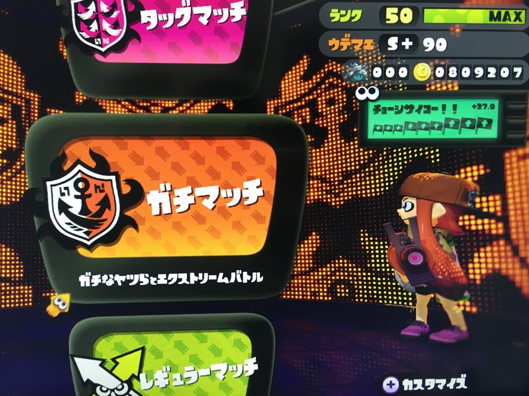

今年は4月から大きく環境が変わったり，インターンに行ったりちょくちょくVim活したりイカ(Splatoon)したりと振り返ってみる と色んな事がありました．
最初にネタバレをすると最も進捗があったのは Splatoon で最高ウデマエS+90まで行ったことでした．
マンメンミ!
去年や一昨年の
- Vim歴換算1年目 -> 1年間『Vim駆動学習』してきて最高に楽しかったのでオススメしたい - haya14busa
- プログラミング2年目 -> 2014年の振り返り. またはプログラミング2年目をVimに捧げるとこうなるという話 - haya14busa
今年はプログラミング初めてからだいたい3年目でした．もう初心者とか言ってられないようになって気がしますが，まだまだ勉強不足・力不足すぎるので精進したい.
はてなサマーインターン
長くなったので記事分けた -> 2015年夏，はてなインターンでMackerelをとにかく便利にして優勝してきた - haya14busa
最高の夏〜
Google Japan Software Engineer インターン
はてなインターンが終わった後，3ヶ月ほどGoogle Japanのインターンに行っていました． Googleは内側ではオープンで全然違う国の違うチームの情報を見れたりするオープンさなのですが， 外側にはオープンではないので基本的にブログに書いたらだめっぽい，というか線引きがわ からないので参加した内容に関する感想は書けません…残念…
Googleの優秀なエンジニアさんたちとGoogleという会社で開発できたのは学びもやりが いもたくさんあって最高の体験でした．
インターン対策とか競技プログラミング
はてなとGoogle以外にもいくつか応募して受かったり落ちたりしたのですが， そのうち1回ホワイトボードコーディング面接があり，超基本的なことを聞かれているの にぜんぜん答えられない…という苦い経験がありました．
頭のどこかで僕は情報学部じゃなかったし，プログラミングも独学で好きなことやってる段階だし 基礎的も知らなくてもまだ仕方ない…と思ってた節があったりしました． しかしこれは完全に言い訳です． 基礎は土台．最低限理解して説明できる程度にはなってないと面接とか関係なく マズいな…と思いデータ構造，アルゴリズムなど勉強しなおしました．
その一環として前から興味はあったんだけどなかなか手がでなかった競技プログラミングにも今年はちょくちょく手をだしはじめました． 最近ちょっとイカしすぎておろそかになってますがやっていきたいです．
面接対策でつかった本とか
世界で闘うプログラミング力を鍛える150問
The Joel on Software 採用面接ゲリラガイド
採用面接ゲリラガイド(version 3.0) - The Joel on Software Translation Project)
Vim 活
incsearch.vim v2.0
- Release Version 2.0 · haya14busa/incsearch.vim
- Vimの検索はもっともっと便利になる! incsearch.vim v2.0 をリリースしました - haya14busa
- 関連リポジトリ
incsearch.vimをカイゼンしてv2.0にしてました．もっと昔にやってた気がするけど今年 の7月でした．リファクタリングしてコンポーザブルにしたりと拡張性をましてincsearch.vimをより便利にできました．
vital-power-assert と VimConf | Vim script 版 powerassert!
- haya14busa/vital-power-assert
- Vim script版 power-assert! テスト書いてないとかお前それ Vim script の前でも同じこと言えんの? - haya14busa
- VimConf 2015
はてなインターン中に作ってその後もちょくちょくと触ってました．またVimConfで発表したりもしました．
去年も大概だったのですが今年は個人的にVimConfに向けての準備がゼンゼン足りてなくて来年こそはちゃんとするゾ!!という気持ちです．
underscore.vim
underscore.jsのVim scriptバージョンを作ってました．実装は去年からなんだかんだやっていましたがエイプリルフールにリリースしました． 実用性がないわけではないけど，ラムダが無いとかスコープの関係上凝ったことしようとすると微妙に使いづらいのが残念ですが開発してて面白かったです．
勢い Vim プラグイン系
niconicomment.vim

思い出したように実行すると面白い．
vim-undoreplay

思い出したように実行すると面白い2．
vital.vim にPullRequest
- Vim.ScriptLocal: Add ScriptLocal (get script-local things) by haya14busa · Pull Request #258 · vim-jp/vital.vim
- Add Data.Set module by haya14busa · Pull Request #239 · vim-jp/vital.vim
- Data.Counter: Implement “Data.Counter” by haya14busa · Pull Request #348 · vim-jp/vital.vim
vim-jp/vital.vim というVim scriptのライブラリにいくつか欲しいモジュールをPRで送ったりした． Vim.ScriptLocal は Vim scriptのスクリプトローカル変数を外からハックするモジュールでVim scriptのテストフレームワークである thinca/vim-themis で使ってもらったりした． 他にはPythonあたりにある便利なデータ構造をVim scriptにポートする業などしていました．
Vim Advent Calendar
前から自分が欲しかった，まとめたかった記事を書きました．今までで最高ブクマ数を頂いてありがたい．
vim-operator-flashy
年末駆け込みプラグイン．VimConfでt9mdさんが開発してる t9md/atom-vim-mode-plus でヤンク対象を フラッシュしていてわかりやすいというのを見せて頂いたのがきっかけになってます． 地味にUX向上してよい．
参加・発表したミートアップ・勉強会系
YAPC
YAPCに初めて参加しました．学生無料便利すぎました．LT発表は応募したのですが残念ながら落ちて残念．
Yokohama.vim
Yokohama.vimではなぜか基調講演という名の戦犯をしてきました． 内容はYAPCでしようとしていたVim駆動学習の話の微調整という感じでした． ちゃんと基調講演と言えるような発表をできるようになってまたYokohama.vim参加したい．
VimConf 2015
上述した．
fpinscala読書会完走
大阪で定期的に開催されていたfpinscala読書会でFunctional Programming in Scalaを(一応)読了しました． が，まだまだ理解しきれてないところ，飛ばしたところなどたくさんあるので2週目に参加してしっかり 関数型プログラミング身につけたいなと思います．
GitHub 記録
あんまり大したことできてなかった
Splatoon

インターン中に買ってインターン終了までにS+になるという目標は達成したのですが， 年内にカンストするという目標は残念ながらできませんでした． しかし，今年の後半は本当にイカしかやってないというベルでやっていてイカ進捗が一番でてました． イカちゃん楽しすぎる…
よかったらみなさん一緒にイカしましょう!
その他
ちょくちょくReact触ったり, 引き続きScala書いたり, golang はじめたりしましたが， OSSっぽいこと，ここに書くようなことはほとんどできませんでした．
最後に
今年は環境が変わっただとか，インターン長期間行ってたとか，Splatoonやってたとか で特に今年後半はあんまり見える活動できてなかったです．もっと頑張りたい．
去年も似たようなこと言ってたような気がしますが来年はVimはもちろんのことVim以外のこともやっていきたいなぁと思います． あともう少し大きいレベルで目標を定めてそれに向かってやれるとよさそう(まだふわふわだけど真剣に考えなきゃ…)．
それと今年最も苦労して迷惑かけたのは英語ではないかという説があるので， 来年は英語でコミュニケーションとれるように頑張って勉強していきたいですね．
以上, @haya14busa の 2015年の振り返り記録でした.
来年もイカよろしく〜